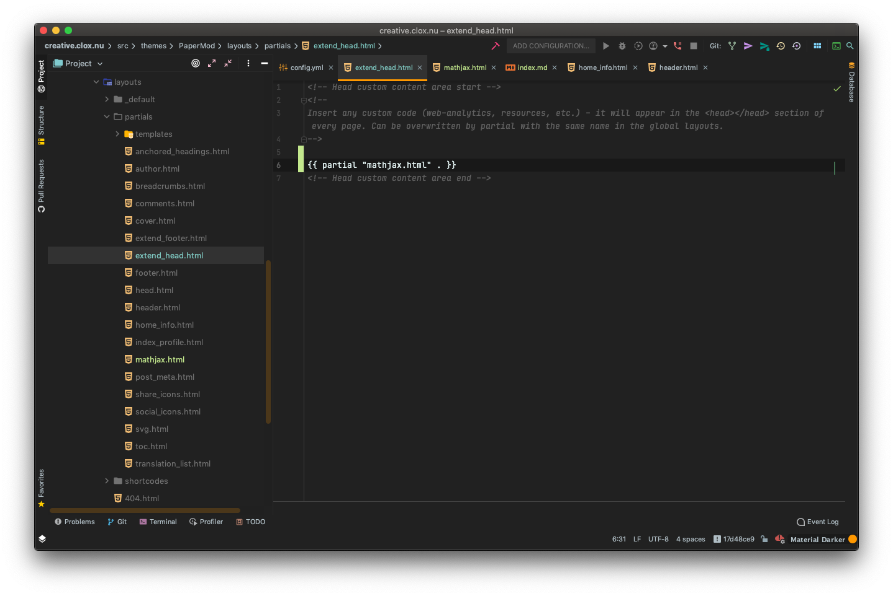

本站使用 Hugo 搭建而成，theme 主要使用 PaperMod，将源仓库 adityatelange / hugo-PaperMod fork 到自己的 GitHub 仓库 cloxnu / hugo-PaperMod 并手动增加Mathjax 特性后，本站仓库主题使用 git submodule 拉取。
以下添加 Mathjax 特性过程参考 https://note.qidong.name/2018/03/hugo-mathjax/
手动添加文件 layouts/partials/mathjax.html

在 partials 目录下的文件 extend_head.html 添加代码

即可。
顺便在这里提一下 git submodule 和 git remote
在我 fork 了源仓库之后，使用命令
git remote add upstream https://github.com/adityatelange/hugo-PaperMod.git
来配置一个 remote，参考 Configuring a remote for a fork ，并使用
git fetch upstream
来同步远程仓库，参考 Syncing a fork 。将 Mathjax 特性添加之后，push 到自己 fork 的仓库，随后在本站仓库使用命令
git submodule add https://github.com/cloxnu/hugo-PaperMod themes/PaperMod
git submodule init
git submodule update --remote
即可更新新的带有 Mathjax 特性的 PaperMod 主题了。
RSS 源参考 这里